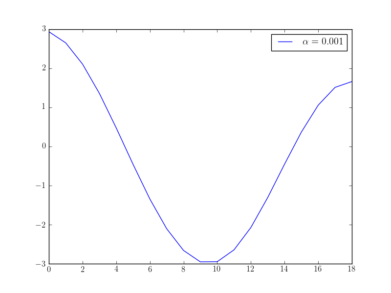
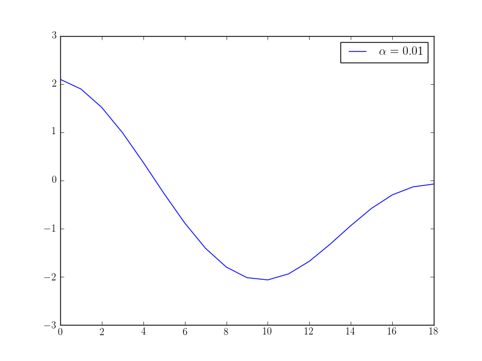
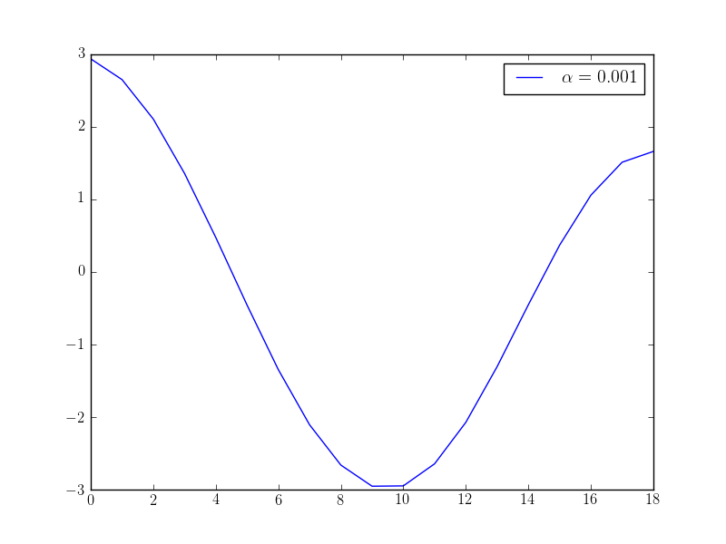
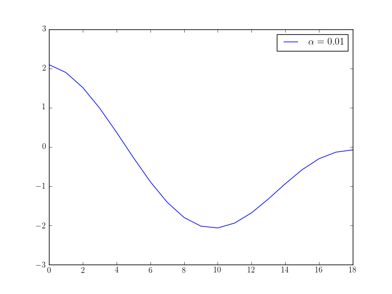

Time-distributed controls¶
Background¶
Some time-dependent problems have control variables that are distributed over all (or some) time-levels. The following example demonstrates how this can be implemented in dolfin-adjoint.
One important aspect to consider is the regularisation term. For time-distributed controls, one typically uses wishes to enforce smoothness of the control variables in time. We will also discuss how such a regularisation term is implemented.
Problem definition¶
We consider the heat equation with a time-dependent source term \(f\), which will be our control variable:
where \(\Omega\) is the unit square, \(T\) is the final time, \(u\) is the unkown temperature variation, \(\nu\) is the thermal diffusivity, and \(g\) is the initial temperature.
The objective value, the model output of interest, is the norm of the temperature variable integrated over time, plus a regularisation term that enforces smoothness of the control in time:
The aim of this example is to solve the minimization problem \(\min_f J\) for some given data \(d\).
Implementation¶
We start by importing the needed FEniCS and dolfin-adjoint modules (note that fenics_adjoint is an alias for dolfin_adjoint):
from fenics import *
from fenics_adjoint import *
from collections import OrderedDict
dt_meas = dt # Keep a reference to dt, the time-measure of dolfin-adjoint
Next, we define the expressions for observational data \(d\) and the viscosity \(\nu\).
data = Expression("16*x[0]*(x[0]-1)*x[1]*(x[1]-1)*sin(pi*t)", t=0, degree=4)
nu = Constant(1e-5)
Next, we define the discretization space:
mesh = UnitSquareMesh(8, 8)
V = FunctionSpace(mesh, "CG", 1)
… and time:
dt = Constant(0.1)
T = 2
We are considering a time-distributed forcing as control. In the next step, we create one control function for each timestep in the model, and store all controls in a dictionary that maps timestep to control function:
ctrls = OrderedDict()
t = float(dt)
while t <= T:
ctrls[t] = Function(V, annotate=True)
t += float(dt)
The following function implements a heat equation solver in FEniCS. The only dolfin-adjoint specific functions are adj_start_timestep and adj_inc_timestep to communicute the time-levels to dolfin_adjoint, and the annotate flag in the assignment to enforce that the update of the forcing function is captured in the dolfin-adjoint tape:
def solve_heat(ctrls):
u = TrialFunction(V)
v = TestFunction(V)
f = Function(V, name="source")
u_0 = Function(V, name="solution")
d = Function(V, name="data")
F = ( (u - u_0)/dt*v + nu*inner(grad(u), grad(v)) - f*v)*dx
a, L = lhs(F), rhs(F)
bc = DirichletBC(V, 0, "on_boundary")
t = float(dt)
adj_start_timestep(time=t)
while t <= T:
# Update source term from control array
f.assign(ctrls[t])
# Update data function
data.t = t
d.assign(interpolate(data, V), annotate=True)
# Solve PDE
solve(a == L, u_0, bc)
# Update time
t += float(dt)
adj_inc_timestep(time=t, finished=t>T)
return u_0, d
u, d = solve_heat(ctrls)
With this preparation steps, we are now ready to define the functional. First we discretise the regularisation term
Note, that \(f\) is a piecewise linear function in time over the time intervals \(K = [(0, \delta t), (\delta t, 2 \delta t), \dots, (T-\delta t, T)]\). Thus, we can write the integral as a sum over all intervals
Discretising the time-derivative yields:
In code this is translates to:
alpha = Constant(1e-3)
regularisation = alpha/2*sum([1/dt*(fb-fa)**2*dx for fb, fa in
zip(list(ctrls.values())[1:], list(ctrls.values())[:-1])])
By default, dolfin-adjoint integrates functionals over the entire time-interval. Since we have manually discretised the regularistation, it is sufficient to tell dolfin-adjoint to evaluate the regularistation at the beginning:
regularisation = regularisation*dt_meas[START_TIME]
Next, we define the remaining functional terms and controls:
J = Functional((u-d)**2*dx*dt_meas + regularisation)
m = [Control(c) for c in ctrls.values()]
Finally, we define the reduced functional and solve the optimisation problem:
rf = ReducedFunctional(J, m)
opt_ctrls = minimize(rf, options={"maxiter": 50})
If we solve this optimisation problem with varying \(\alpha\) parameters, we observe that we get different behaviour in the controls: the higher the alpha value, the “smoother” the control function becomes. The following plots show the optimised control evaluated at the middle point \((0.5, 0.5)\) over time for different \(\alpha\) values:
 



{kind=link}
{kind=link}

The following code creates these plots:
from matplotlib import pyplot, rc
rc('text', usetex=True)
x = [c((0.5, 0.5)) for c in opt_ctrls]
pyplot.plot(x, label="$\\alpha={}$".format(float(alpha)))
pyplot.ylim([-3, 3])
pyplot.legend()
pyplot.savefig("control_alpha={}.png".format(float(alpha)))